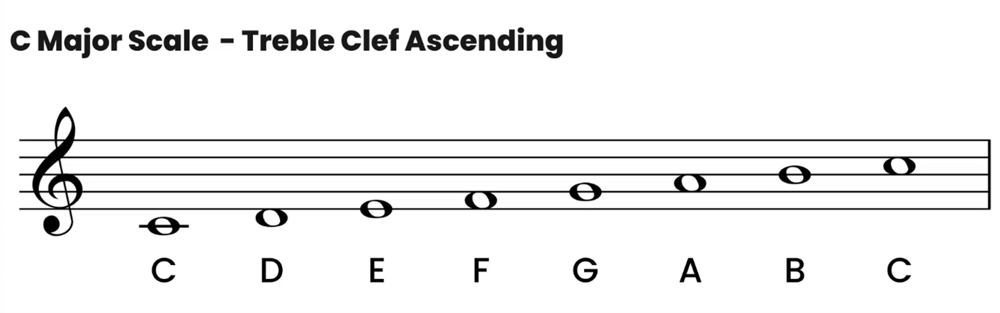
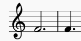

Guide To Time Signatures In Music
A time signature is an indication of how many beats are in each measure of music, as well as which note value is counted as a beat

Time signature is typically represented by two stacked numbers (like a fraction). The top number is the number of beats in a measure and the bottom number is the note value that represents one beat.
There are 3 types of Time Signatures
1. Simple: The most common types of simple time signatures are 2/4, 3/4, 4/4, and 2/2. Sometimes the letter “C” (meaning common time) will be used in place of 4/4. Both C and 4/4 indicate that there are four quarter note beats in each measure. For 2/4 and 3/4, there are two and three quarter note beats per measure, respectively.
2. Compound: Common compound time signatures include 9/4, 6/8, and 12/8. The beat of a piece of music with a compound time signature is broken into a three-part rhythm. In each of the cases above, quarter or eighth notes are combined in multiples of three.
3. Complex: Complex time signatures are more common in music written after the nineteenth century. Complex time signatures don't follow typical duple or triple meters. Examples of complex time signatures include: 5/4, 11/4, and 7/8.
What is a musical note?
A note is a name given to a specific audio vibration.Click on the notes to hear their sounds!!
Each line and space of the staff correspond to a musical pitch, which is determined by the clef. Music notes are named after the first seven letters of the alphabet: A, B, C, D, E, F, G. The two clefs that are primarily used are the treble clef and bass clef.
Ledger lines are used to notate pitches below or above the regular lines and spaces of the staff. ‘Middle C’, one of the first notes beginning music students learn, is located on a ledger line between the bass clef and treble clef staffs. You can see how it is notated in both of these clefs in the examples below.
Beats of a note
In a song there are each note is held for different amount of time, so how would one tell the difference for how long a note is suppose to be held??
Well there notes with different beats are written in a different way!
In sheet music notation, the note value or relative duration of a note is indicated by three basic components: the color of the note head, sthe presence or absence of a stem, and the presence or absence of flags or beams. Each type of note value also has a companion symbol, called a rest, that tells the player not to play for the same duration as the note value.
The whole note is equal to four beats in 4/4 time (see time signature in other tab)
When you see a dot after any note value, it means you need to add one-half the value of that note’s duration.